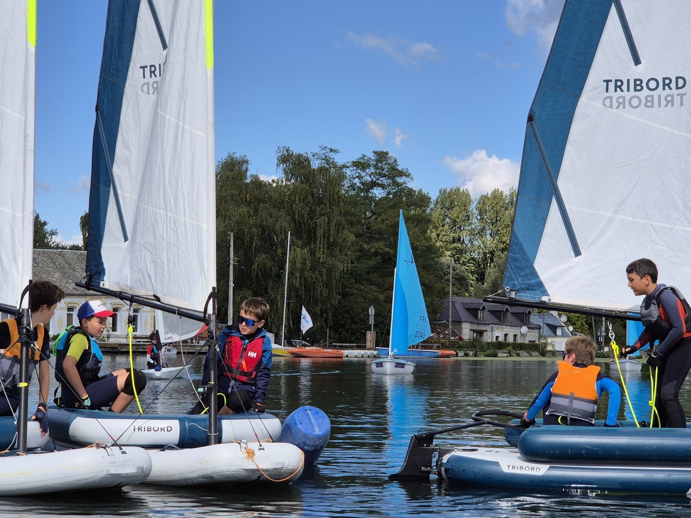
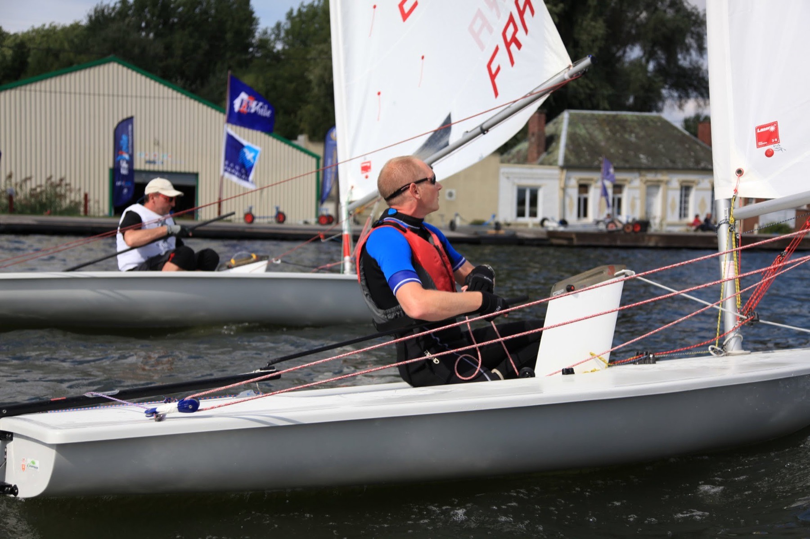

En ce moment
Stages de la Toussaint
Stages de voile

Jeunes navigateurs
7 à 17 ans · pendant les vacances
Un plan d’eau intérieur calme, entre l’eau et la forêt, à Bouchain. Prenez le sachet de votre activité et retournez-le : tout y est écrit.
En ce moment
Stages de la Toussaint

Jeunes navigateurs
7 à 17 ans · pendant les vacances
Passeport Voile en plus pour une première inscription au club.
Voir les dates et s’inscrire
Canoë, paddle & Hansa
Débutants bienvenus

Le grand week-end
Dernier week-end complet de juin

Toute l’année
Jeunes et adultes · licence comprise
| Adulte | Jeune | |
|---|---|---|
| Cotisation | 41 € | 29 € |
| Licence | 72 € | 33 € |
| Forfait séances | 200 € | 200 € |
| Total | 313 € | 262 € |
| Soit par séance | 9,80 € | 8,20 € |

Centres aérés, CE, écoles
Dès 6 personnes
| Activité | J | F | M | A | M | J | J | A | S | O | N | D |
|---|---|---|---|---|---|---|---|---|---|---|---|---|
| Accueil en semainelundi au vendredi, 9 h–12 h et 14 h–18 h | ||||||||||||
| Accueil le samedi14 h–18 h | ||||||||||||
| 24 heures du Bassin-Ronddernier week-end complet | juin | |||||||||||
| Stages de la Toussaint19–23 et 26–30 octobre | octobre |
Les autres stages ont lieu pendant les vacances scolaires : dates et places sur stages.bassin-rond.net.

Le Bassin-Rond est un plan d’eau intérieur, calme et protégé, entre l’eau et la forêt. Les péniches y rappellent un long passé batelier.
On y découvre la voile et les activités nautiques sur des bateaux qui avancent sans bruit et sans polluer. De l’enfant au senior, seul ou en groupe, chacun essaie des supports en solitaire ou en équipage, dans un cadre sécurisé.
| Plan d’eau | Intérieur, calme et protégé |
|---|---|
| Cadre | L’eau et la forêt |
| Moteur | Aucun : la voile, la pagaie et le paddle |
| Le club | 140 licenciés, 3 labels fédéraux |
| Situation | Bouchain, entre Valenciennes, Cambrai et Douai |
Un club équipé : du premier bord en Optimist au 420 de compétition.

dès 7 ans
LE bateau pour découvrir la voile en toute sécurité.

pour les plus jeunes
On est à deux, il y a plein de place : c’est plus rigolo.

dès 11 ans
Il faut déjà du niveau pour grimper sur cette monture.

dès 12 ans
Légère et maniable, elle demande de la pratique avant d’être maîtrisée.

dès 14 ans
Vif, rapide et adaptable. Des sensations assurées.

en solo ou en double
Ultra polyvalent, parfait pour débuter.

bateau collectif
Pour se balader et découvrir la voile tout en douceur.
à deux équipiers
Convivial : on débute à deux et on peut aller jusqu’à la compétition.
Et à la location : canoë, kayak, paddle, paddle géant et voilier Hansa.
Le dernier week-end complet de juin
Depuis le début des années 2000, l’évènement attire plus de 5000 personnes sur un week-end.
Reconnue d’intérêt communautaire, la fête est autant sportive que culturelle. Au programme : baptêmes nautiques, bulles aquatiques, jeux traditionnels et ateliers créatifs. Le samedi soir, un repas est suivi d’un spectacle.
Toute l’année, d’autres rendez-vous sont ouverts à tous, adhérent ou non : la fête du sport, les Rand’eau nautic en canoë-kayak.


Ici, on vient pour naviguer et on reste pour l’ambiance.
Les enfants reviennent d’une année sur l’autre. Le club accueille aussi les aînés de l’EHPAD de Bouchain pour des activités récréatives, et propose chaque année aux membres de s’essayer à l’habitable en mer.
Rand’eau nautic
18 participants encadrés par Geoffrey, notre professionnel du canoë-kayak, avec des exercices techniques au programme.
Média
Un vendredi 24 juillet, France Bleu Nord a mis le club à l’honneur toute la journée sur ses ondes.
Média
Pour la 20e édition des 24 heures, Guillaume était l’invité de l’émission « Sportez-vous bien ! ».
| Adulte | Jeune | |
|---|---|---|
| Cotisation | 41 € | 29 € |
| Licence | 72 € | 33 € |
| Forfait séances | 200 € | 200 € |
| Total | 313 € | 262 € |
| Soit par séance | 9,80 € | 8,20 € |
Supports adultes : ILCA, 420, planche à voile, RS Quba, Hansa.
Supports jeunes : Optimist, planche à voile, RS Quba, Open Skiff, Newcat 12, Hansa.
dès 20 € par personne, la demi-journée
Des formules sur 4 ou 5 jours : multi-activités (deux activités par jour, dont une séance de voile) ou nature (une activité de deux heures par jour et des balades autour du site). Matériel et encadrement compris, 6 personnes minimum, camping possible.
Le club prend en charge la moitié du livret de certification de la Fédération française de voile pour vos jeunes.
Toutes les formules et le camping03 27 35 72 28
directeur@bassin-rond.net
Accueil
Du lundi au vendredi, 9 h–12 h et 14 h–18 h, toute l’année.
Le samedi, 14 h–18 h, de mars à fin juin et de septembre à fin octobre.
Le club ne gère ni le port ni la pêche.